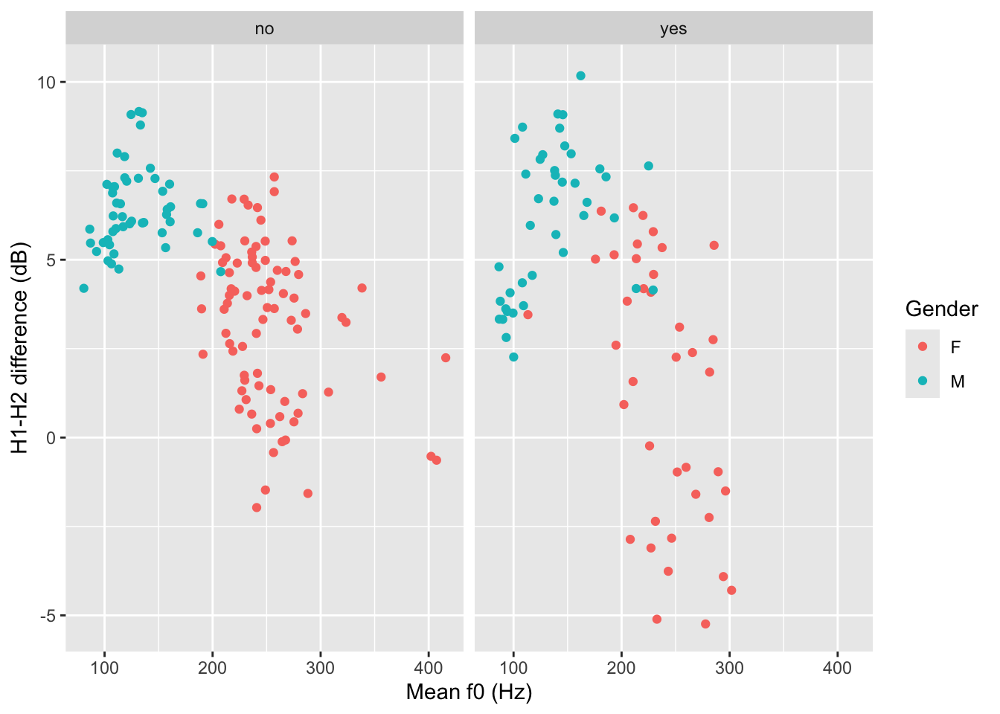

library(tidyverse)
theme_set(theme_light())Faceting plots
Learn how to split plots into panels with faceting
1 Faceting and panels
Sometimes we might want to separate the data into separate panels within the same plot.
We can achieve that easily using faceting.
2 Politeness and speech
Let’s revisit the plots from Plotting basics in R. We will use the polite data again.
This is the plot you previously made. Try and reproduce it by writing the code yourself (you also have to read in the data!).

2.1 Does being a music student matter?
That looks great, but we want to know if being a music student has an effect on the relationship of f0mn and H1H2.
In the plot above, the aesthetics mappings are the following:
f0mnon the x-axis.H1H2on the y-axis.genderas colour.
How can we separate data further depending on whether the participant is a music student or not (musicstudent)?
We can create panels using facet_grid(). This function takes lists of variables to specify panels in rows and/or columns.
2.1.1 Faceting
Faceting a plot allows to split the plot into multiple panels, arranged in rows and columns, based on one or more variables.
To facet a plot, use the facet_grid() function.
The syntax is a bit strange. You can specify rows of panels with the rows argument and columns of panels with cols argument, but you have to include column names inside vars(), like this:
polite |>
ggplot(aes(f0mn, H1H2, colour = gender)) +
geom_point() +
facet_grid(cols = vars(musicstudent)) +
labs(
x = "Mean f0 (Hz)",
y = "H1-H2 difference (dB)",
colour = "Gender"
)

You could write a description of this plot like this:
Figure 2 shows mean f0 and H1-H2 difference as a scatter plot. The two panels indicate whether the participant was a student of music. Within each panel, the participant’s gender is represented by colour (red for female and blue for male). Male participants tend to have higher H1-H2 differences and lower mean f0 than females. From the plot it can also be seen that there is greater variability in H1-H2 difference in female music students compared to female non-music participants. Within each group of gender by music student there does not seem to be any specific relation between mean f0 and H1-H2 difference.
The polite data also has a column attitude with values inf for informal and pol for polite. Subjects were asked to speak either as if they were talking to a friend (inf attitude) or to someone with a higher status (pol attitude).
Recreate the last plot, this time faceting also by attitude. Use the rows column to create two separate rows for each value of attitude.
polite |>
ggplot(aes(f0mn, H1H2, colour = gender)) +
geom_point() +
facet_grid(cols = vars(musicstudent), rows = ...)Now write a description of the plot.